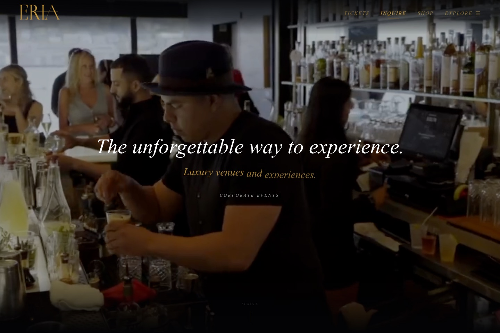
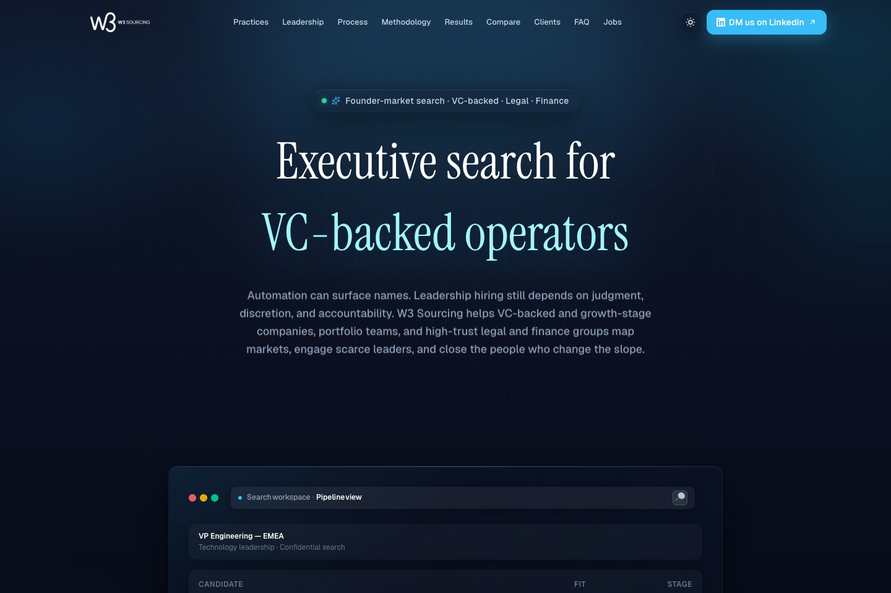

Teregon
A systems-minded identity for a living, changing world.
WATER SYSTEMS · RESPONSIBLE INTELLIGENCE
Applied AI and software for messy information, real decisions, and a living world.
01 / BRAND ARCHITECTURE
A simple structure connects Teregon’s point of view to what we build and where we apply it.
A systems-minded identity for a living, changing world.
Applied AI and software: grounded assistants, decision systems, and production tools.
Watershed systems and software for water filtration and appliance operators.
CONFIGURABLE WATER-SECTOR OFFERINGS · NOT CLAIMED AS DEPLOYED WATER CLIENT SYSTEMS
Answers from approved manuals and product guidance; hands off when sources do not cover the question.
Routes service cases through explicit policy checks, with review before consequential actions.
Surfaces repeat issues, product questions, and service-quality patterns across support records.
02 / WHAT WE BUILD
We work where information is scattered, workflows are hard to see, and the next decision matters.
Search trusted sources, summarize records, triage requests, and prepare next steps for review.
Connect CRM, product, support, and field records into forecasts and decision-ready tools.
Ship web apps, internal tools, integrations, and reliable data paths around real work.
Connect rainfall, river observations, and watershed context to understand how water moves across a place.
03 / LIVE CLIENT WEBSITE BUILDS
Two distinct businesses, each with a clear digital path and a live production website.

HOSPITALITY / EVENTS · LIVE
Venue and experience discovery connects event stories and press to private and corporate inquiries.
NEXT.JS 16 · REACT 19 · SANITY CMS

EXECUTIVE SEARCH · LIVE
Practice, methodology, results, and leadership context guide visitors toward a direct inquiry.
NEXT.JS 16 · REACT 19 · TYPESCRIPT
04 / PRIOR BRIO TEAM EXPERIENCE · BRIOBOT
A Salesforce e-commerce support workflow that gathers context, retrieves policy and product evidence, and proposes an action for review.
SUPPORT CASE → GROUNDED PROPOSAL → HUMAN / RULE CHECK → OPTIONAL SALESFORCE WRITE
05 / PRIOR BRIO TEAM EXPERIENCE · BRIOPEDIA
An internal knowledge system that gives support teams a maintained source, searchable history, and chat over retrieved context.
DOCKER COMPOSE · SOURCE-BOUND SUPPORT KNOWLEDGE
06 / WATER INTELLIGENCE · ILLUSTRATIVE CONCEPTS
Illustrative Teregon Water concepts—not deployed products—show how river and watershed signals could support planning.
WATERSHED / ILLUSTRATIVE
Combine land cover, rainfall, stream observations, and nearby assets to explore upstream-to-downstream connections.
RIVER FLOW / ILLUSTRATIVE
Bring rainfall, tributary, and stream observations together to explore how conditions change along a river system.
07 / A PRACTICAL WAY TO START
Start with the decision and a baseline. Ship in the real workflow, then verify what changed.
Map the workflow, sources, constraints, and owner.
Connect data, interfaces, models, and checks.
Keep people, permissions, and failure paths in view.
Compare against an agreed baseline and refine.
WATER SYSTEMS · RESPONSIBLE INTELLIGENCE
Tell us what is stuck: the workflow, the scattered sources, or the decision that needs a clearer view.
The website assistant is a source-grounded guide to Teregon’s published work. For a project conversation, email us directly.
hello@teregonlabs.com ↗